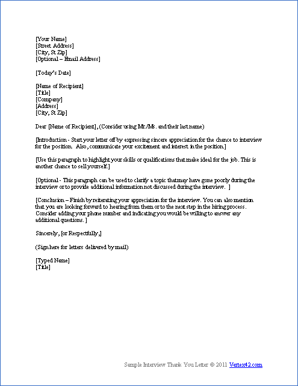
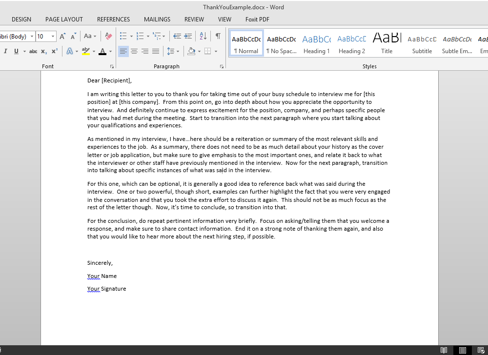

Business Communications
Grammar: What Are Adjectives and Adverbs
I will be talking about adjectives and adverbs and what they are. I will also give the meaning of each, how they are used, and the difference between the two. I feel as if learning these are important because some people actually don’t know the difference between the two, and also not know how to properly use or identify them. Adjectives and adverbs play a big part in grammar and it is important to understand the differences to write better and more effectively.
Adjectives are words that describes or modify either the subject or noun in the sentence. You can find the adjective in the sentence by asking the question, “What kind?”, “Which one(s)?”, “And how many?”. Overall, there are two categories of adjectives that can be found: general and specific. General adjectives can be used to describe almost any noun. Some of the general ones are: some, huge, and ginormous. Specific adjectives will refer to the subject or noun specifically, and cannot easily or logically be placed with another noun or subject to keep the same meaning or reference. Some of the specific ones are: square, five, and beautiful.
Adverbs are words that modify verbs, adjectives, and other adverbs. They often are used to show manner, place, or time. Adverbs answers the questions, “How?”, “Where?”, “When?”, or “To what degree?”. Adverbs and adjectives get commonly confused with each other, but to quickly modify the difference you have to ask those questions in your head to figure it out. When trying to find an adverb, the word will most likely end with a -ly, but that is not always the case. Some examples are squarely, beautifully, worse, left, and more.
Professional How-Tos: How to Write a Thank You Note
Regardless of industry, likely you will have to do a ton of writing not only for work assignments, but for general correspondence between you and your superiors, colleagues, clients/customers, and many others. Mastering this skill is crucial to career success since effective communication in the workplace is key to doing your best when it comes to working in a team and company. One thing that might be needed is to send thanks to someone and doing so professionally is very important and has special rules to pay attention to. In this case, a thank you note is a email, note, or letter giving thanks to another for their role and/or assistance at a work task, for an interview, or for networking (i.e. thanking someone for reaching out or introducing you). It normally details why the thanks is being sent and expresses appreciation, too. Below are tips on how to make yours stand out.
- Overall, appearance of it is extremely important - make sure there are no strains or crumples if you plan to send a physical note.
- Likewise, there should be no grammatical errors - proofreading is a must.
- There needs to be a standard format complete with: your name and address (home or company), their name and address (home or company), the opening greeting (ex. Dear...) (and subject if it's an email), the body, and the closing greeting with the signature. The items should be more or less in this exact order.
- Keep all greetings formal and select the best for the occasion and person.
- The body should be succinct and clear. Having the right length is important so as to not drag on.
- When concerning the language of the note, please be mindful of excessive use of emotions to avoid the letter seeming insincere, pandering, or too 'gushy'.
- Lastly, it is good to highlight specific examples of why you're grateful for certain actions or speech - general thanks is fine, but mentioning specifics really helps the recipient know exactly why you're thankful and makes it appear more heartfelt.
Consider a template like below as a starting base. But remember, add your own style to it!
 